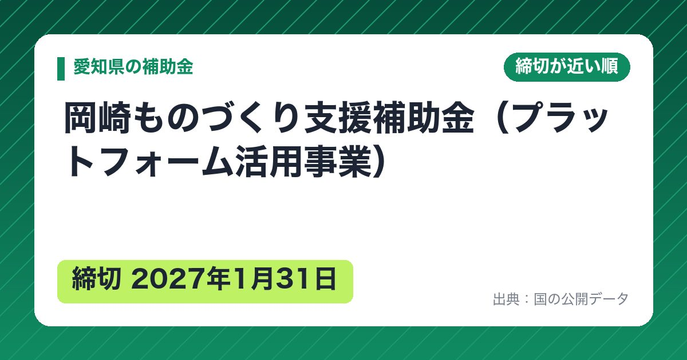

岡崎ものづくり支援補助金（プラットフォーム活用事業）

締切 2027年1月31日｜上限 50万円
新たなビジネスパートナーを見つけよう！岡崎市のものづくり企業のプラットフォーム活用を支援します
概要
| 対象地域 | 愛知県岡崎市 |
|---|---|
| 補助上限額 | 50万円 |
| 補助率 | 補助対象経費の1/2以内（予算の範囲内であれば、補助限度額に達するまで何回でも申請可能） |
| 受付期間 | 2026年3月31日 〜 2027年1月31日 |
| 対象の従業員数 | 従業員数の制約なし |
| 利用目的 | 新たな事業を行いたい |
| 対象業種 | 製造業 |
| 実施機関 | 岡崎ものづくり支援補助金 |
公募の内容（原文の抜粋）
■目的・概要
岡崎市内のものづくり事業所が、新製品・新技術の開発や既存製品・技術の高付加価値化のために、他の事業者とのマッチングを支援・提案するサービス（プラットフォーム）を利用する費用の一部を補助します。対象となる経費は、サービスを利用するにあたり、かかる登録費用、運営機能費用、伴走支援費用です（振込手数料は除く）。
■応募資格
以下の３つの要件をすべて満たしていることが基準となります。
・日本標準産業分類の大分類Eに分類される製造業を営む法人又は「個人事業の開業・廃業届出書」を税務署に提出した個人事業主であること
・市内に本社機能または製造を行う工場を6か月以上引き続き有していること
・市税を完納していること
■地理条件
愛知県岡崎市内（市内に本社機能または製造を行う工場を6か月以上引き続き有していること）
■備考
・対象となるプラットフォームサービスは、小売りを主目的としないもの、かつプラットフォームへの登録企業数が50社以上のものである必要があります。
・すべて予算がなくなり次第終了となります（予算の上限に達している場合は受付不可）。
・申請前には、申請可否及び申請内容等について、必ず岡崎ものづくり推進協議会事務局へ事前確認（事前相談）を行ってください。
・中小企業基本法第2条に規定する中小企業者でない者は、12月1日から申請が可能です。
■問合せ先
岡崎ものづくり推進協議会 事務局
住所：〒444-8611 岡崎市竜美南一丁目2番地 （岡崎商工会議所内）
電話：0564-53-6191
FAX：0564-53-0101
岡崎商工会議所受付時間（土日祝日を除く、午前10時から午後５時まで）に限る。
■参照URL
https://www.okamono.com/subsidy_list.php
申請前の準備
- GビズIDプライム（電子申請に必須・無料・発行まで1〜2週間かかることあり）：gbiz-id.go.jp
- 直近の決算書（個人事業主は確定申告書の控え）
- 事業計画（何に使い、どう売上・生産性が上がるか）
- 見積書（買う物・頼む工事の）
ほとんどの補助金は、申請時に直近の決算書（個人は確定申告書）が必要で、交付後も経費の帳簿が求められます。
広告準備に使えるサービス：
・無料の会計自動化ソフト マネーフォワード クラウド会計  （法人の帳簿・決算書づくりを自動化）
（法人の帳簿・決算書づくりを自動化）
・やよいの青色申告オンライン  （個人事業主の青色申告に）
（個人事業主の青色申告に）
愛知県のほかの補助金
- 既存住宅流通活性化緊急促進事業（締切 2026年12月25日）
- 令和７年度（補正） 商用車等の電動化促進事業（建設機械）（締切 2027年1月29日）
- 岡崎ものづくり支援補助金（知的財産権取得事業）（締切 2027年1月31日）
- 岡崎ものづくり支援補助金（依頼試験事業）（締切 2027年1月31日）
- 岡崎ものづくり支援補助金（新製品共創事業）（締切 2027年1月31日）
- 岡崎ものづくり支援補助金（共同研究事業）（締切 2027年1月31日）
- 【東海市】小規模企業等振興資金等信用保証料補助金（締切 2027年3月31日）
- 【愛知県大府市】2026年度大府市カーボンニュートラル推進生産設備導入支援補助金（ユーティリティ設備）（締切 2027年3月31日）